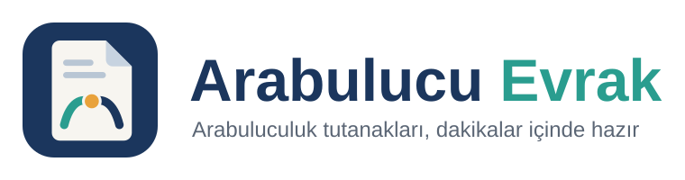
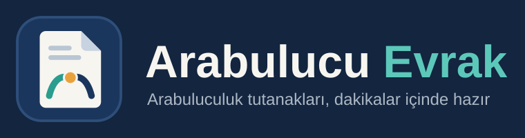

Arabulucu Evrak, arabulucuların bütün dosya evrakını tek formdan hazırlayan masaüstü uygulamasıdır. Marka; güven (hukuk, gizlilik), uzlaşma (iki tarafın ortada buluşması) ve kolaylık (her yaştan kullanıcı) üzerine kuruludur. Bu sayfa logonun, renklerin ve yazı tiplerinin nasıl kullanılacağını anlatır.
Logo
İşaret: bir belge sayfası üzerinde soldan (turkuaz) ve sağdan (lacivert) gelen iki taraf, ortadaki amber mühürde buluşur. Mühür arabulucuyu ve varılan anlaşmayı temsil eder; iki yay birlikte bir “A” (Arabulucu) oluşturur.


Yatay logo
Web sitesi, broşür, e-posta imzası, sunum kapağı. Açık zemindelogo-yatay-acik, koyu zeminde logo-yatay-koyu.İşaret (simge)
Uygulama simgesi, sosyal medya profil resmi, küçük alanlar.logo-isaret.svg ve arabulucu-evrak.ico.Boşluk ve boyut
Logonun çevresinde en az işaretin yarısı kadar boşluk bırakın. Yatay logo 160 pikselden, işaret 16 pikselden küçük kullanılmaz.Yapın
- Logoyu dosyalardaki hâliyle kullanın.
- Fotoğraf üzerinde koyu ya da açık düz bir zemin kullanın.
- Adı her zaman iki kelime yazın: Arabulucu Evrak.
Yapmayın
- Renkleri değiştirmeyin, gölge ya da efekt eklemeyin.
- Logoyu esnetmeyin, döndürmeyin.
- “ArabulucuEvrak”, “Arabulucu-Evrak” gibi yazmayın.
Renkler
Lacivert ana renktir; turkuaz eylem ve olumlu durumlar, amber yalnızca vurgu (mühür, önemli uyarı) içindir. Metin ve zemin karşıtlığı yaşlı kullanıcılar için en az 4.5:1 tutulur.
#1B365DAna renk: başlıklar, ana düğmeler, logo zemini.
#2A9D8FEylem, seçili durum, “tamam” işaretleri.
#E9A23BYalnızca vurgu: mühür, dikkat çekilecek bilgi.
#F7F5F0Belge sayfası, açık zeminler.
#1E2430Gövde metni.
#5B6675Açıklama ve ikincil metin.
Yazı tipi
Uygulamada Windows ile gelen Segoe UI kullanılır. Basılı ve web işlerinde aynı görünüm için Segoe UI, yoksa ücretsiz Noto Sans kullanılır; ikisi de Türkçe karakterleri eksiksiz destekler. Belge metinleri Times New Roman ile kalır (UYAP ve mahkeme alışkanlığı).
| Kullanım | Örnek | Boyut / kalınlık |
|---|---|---|
| Başlık | Dosyanın türünü seçin | 28–34 pt, kalın |
| Bölüm başlığı | Tutanak bilgileri | 24 pt, yarı kalın |
| Gövde | Bu dosyada hangi tutanaklar hazırlanacak? | 15–17 pt, normal |
| Açıklama | Boş bırakılırsa “Başvuru tarihi” ile aynı olur. | 14–15 pt, Kurşun Gri |
Arayüz ilkeleri
Okunur
En küçük yazı 13 pt; form etiketleri 16 pt. Soluk gri metin kullanılmaz.Yazılı düğmeler
Her önemli düğmede simgenin yanında yazı vardır (“Boş bırak”, “Hatırla”). Yalnız simge, yalnızca yardımcı işler içindir.Büyük hedefler
Düğme ve kutular en az 40 piksel yüksekliktedir.Adım adım
İş 4 adımda ilerler; kullanıcı hep nerede olduğunu ve sonra ne yapacağını görür.Düğmeler
Bilgileri gir →Belgeleri üretGeriDil ve üslup
Böyle yazın
- Kısa, düz cümleler: “Tutanakları işaretleyin.”
- “Siz” diye hitap edin.
- Hukuki terimleri doğru kullanın: tutanak, son tutanak, anlaşma belgesi.
Kaçının
- Teknik terimler: “şablon değişkeni”, “dosya formatı” yerine “bilgi”, “Word / UYAP”.
- Abartılı vaatler; hukuki doğruluk her zaman önce gelir.
Kısa tanıtım: “Arabulucu Evrak, arabuluculuk dosyanızın davet mektubundan son tutanağına kadar bütün evrakını tek formdan, Word ve UYAP biçiminde hazırlar. İnternet gerektirmez; bilgileriniz bilgisayarınızdan çıkmaz.”